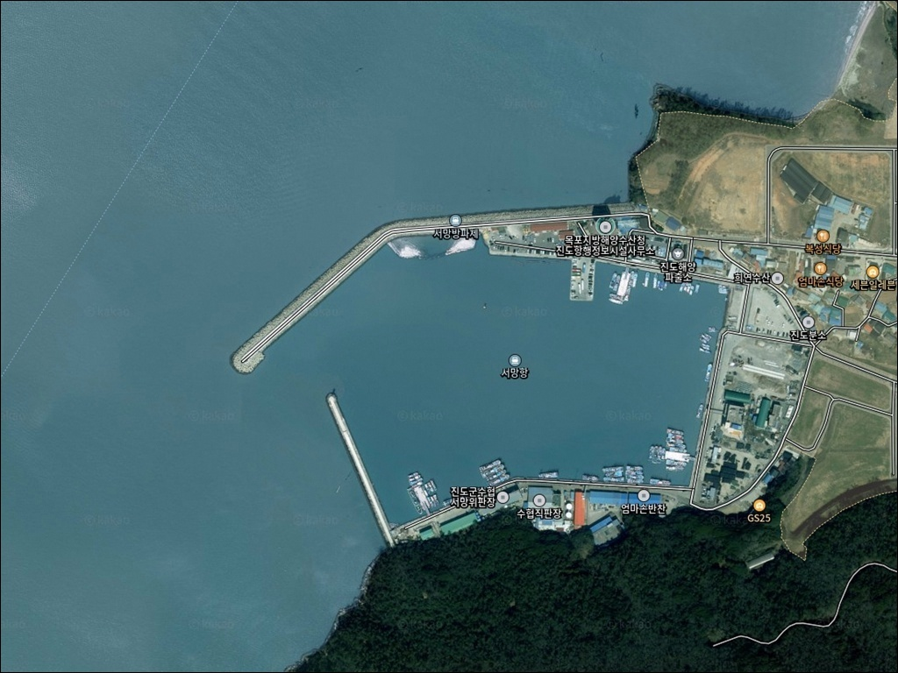
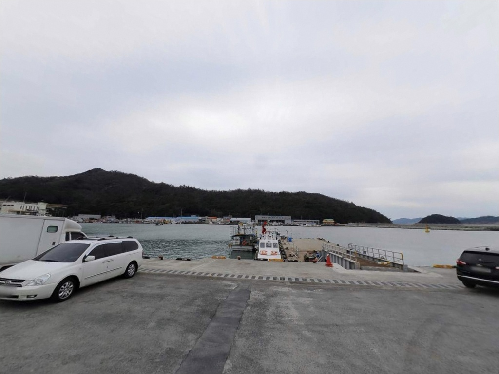
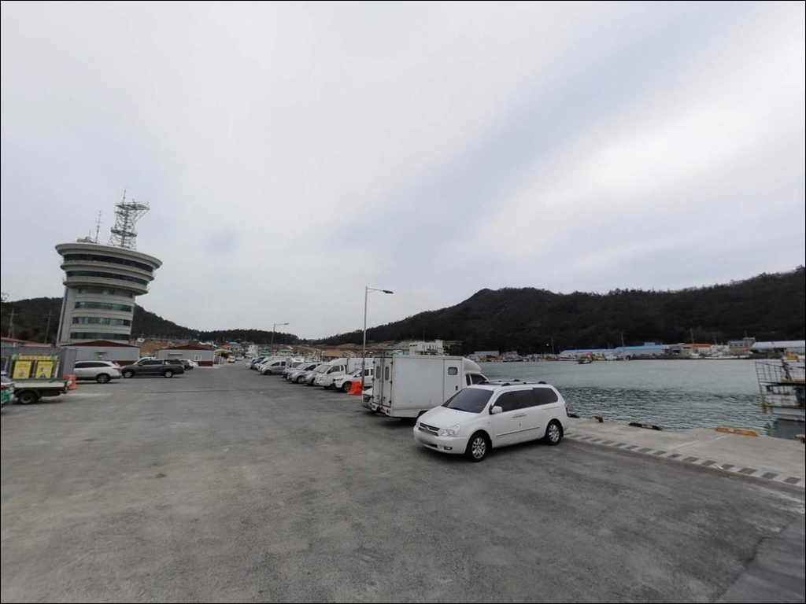
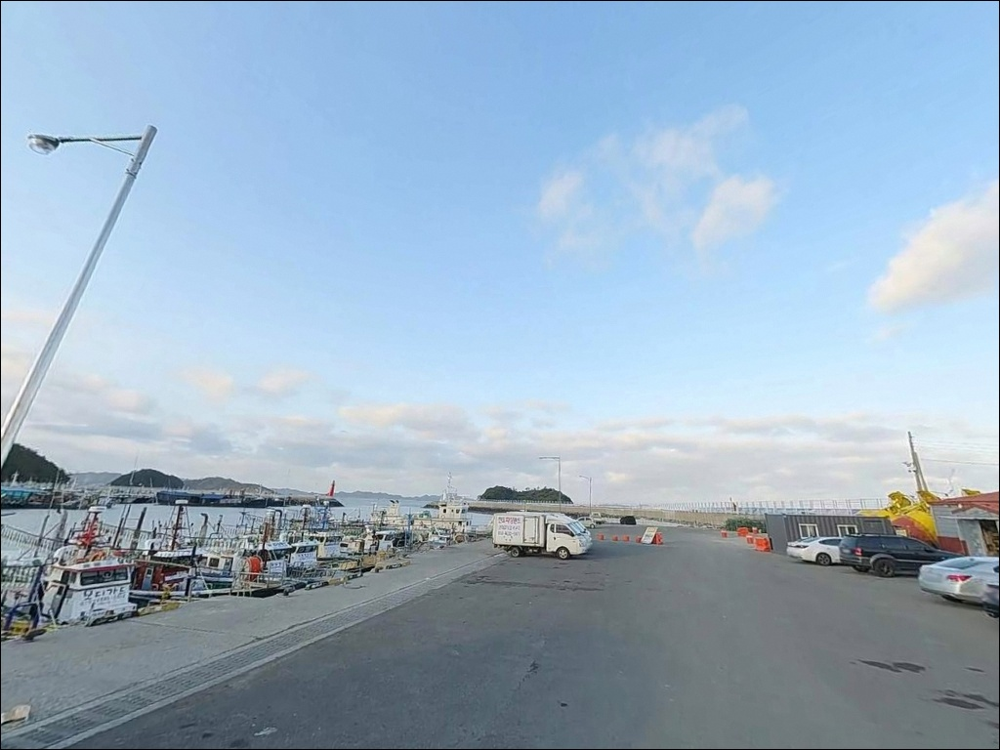
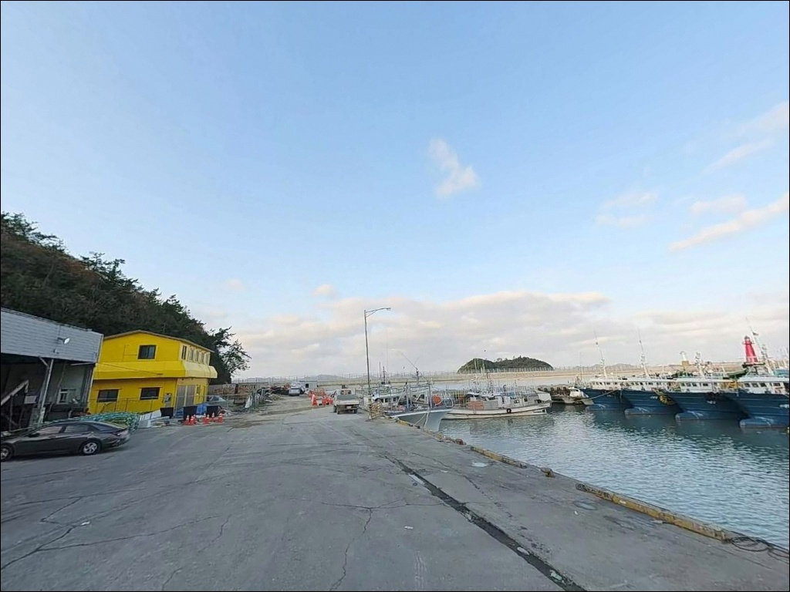
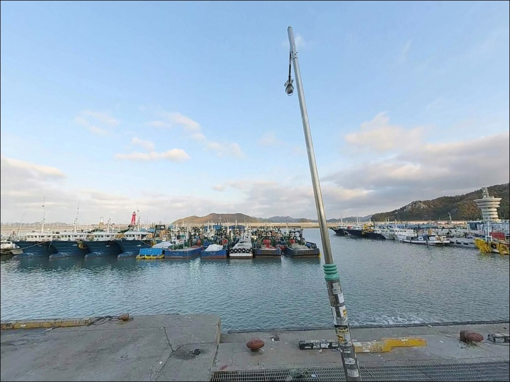
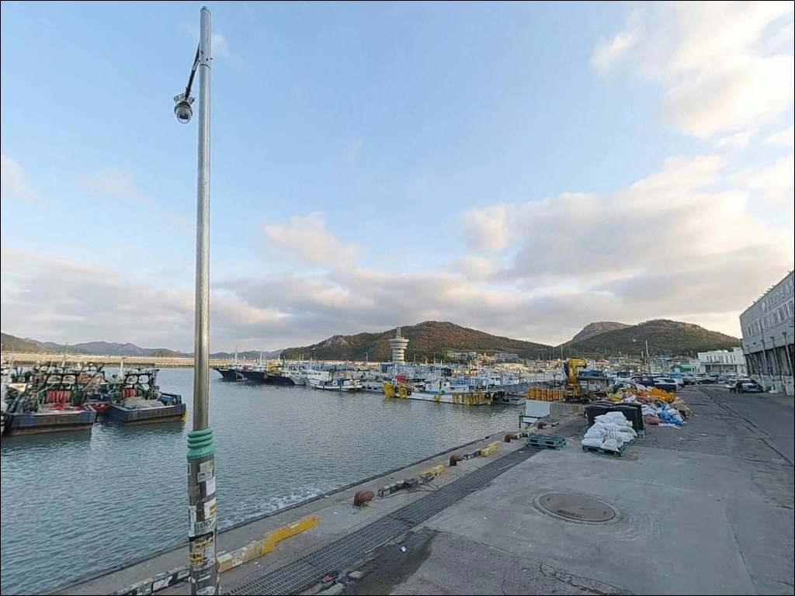
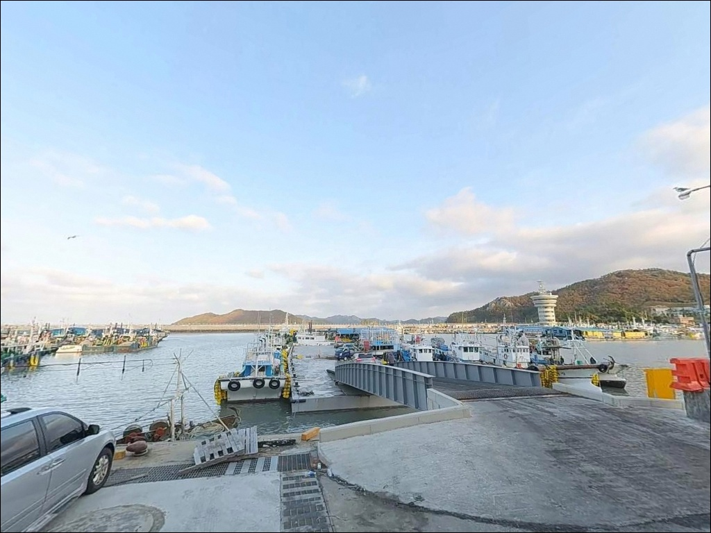
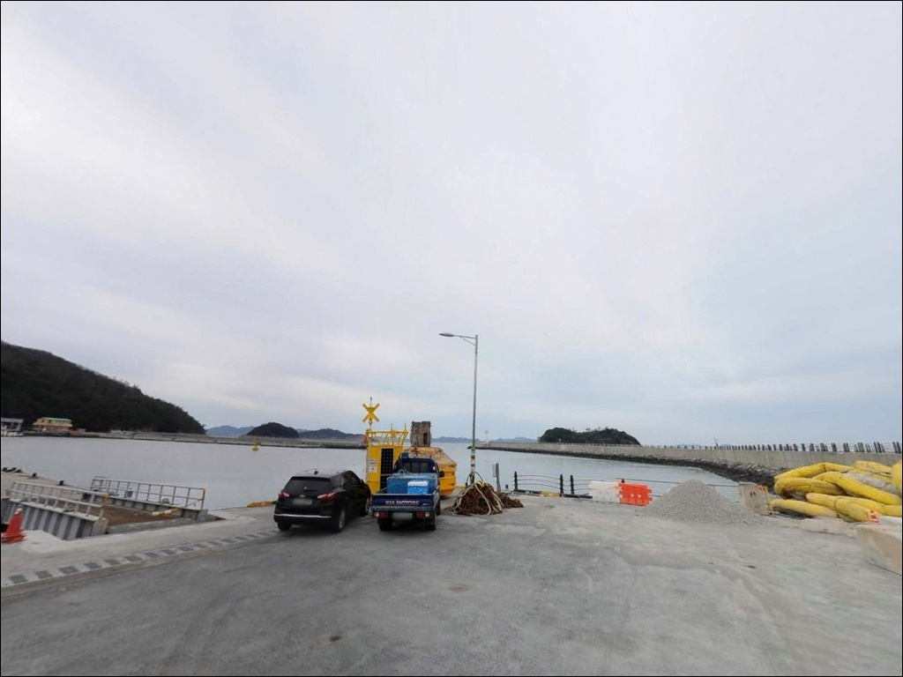

서망항(서망방파제), 서망방파제, 진도 전남 진도군 고요한 수면을 바라보며 차박, 낚시를 즐기기 좋은 해안
이 페이지에는 광고(제휴 링크 포함)가 있으며, 광고 링크를 통해 구매하면 운영자가 판매 수익 또는 수수료를 받을 수 있습니다. 포인트 사진: 카카오맵 스카이뷰·로드뷰. 이 페이지의 지도·사진 이미지는 카카오맵의 실제 서비스 이미지와 다를 수 있습니다.


포인트 안내
서망항(서망방파제)
전남 진도군 임회면 남동리 635-4
서망항에서 방파제 도보낚시만 시도하고
돌아오는 낚시인들이 적지 않습니다.
이 포인트는 방파제 현장 후기보다
선상낚시 출조 정보가 압도적으로 많은
국가어항으로, 배낚시 활용 없이 찾으면
이 포인트의 절반을 포기하는 것과 다름없습니다.
낚시어선 거점항포구로 공식 지정된
서망항의 진짜 강점은
진도 외해권 접근성에 있습니다.
진도 남부의 강한 조류는 방어·부시리·참돔
등 다양한 회유성 어종을 붙잡아 두는
원동력이기도 합니다.
방파제 도보낚시도 감성돔·붕장어·농어를
노릴 수 있는 환경이지만,
진도 외해권의 진짜 어자원을 만나려면
출조선을 활용하는 것이 기본입니다.
이 글은 서망항의 방파제 지형 구조와
낚시 방식별 공략법, 선상낚시 출조 정보를
중심으로 정리합니다.

1. 방파제 지형 구조와 조류 환경
서망항은 남·북 두 방파제가
외해 방향으로 뻗어 있는 구조로,
외항 노출도가 높은 편입니다.
빨간 등대와 흰 등대가 각 방파제 끝단에
위치하며, 빨간 등대 쪽에서 낚시인들이
자주 포진한다는 현장 후기가 확인됩니다.
북측 방파제 인근 수심은
약 0.6m~3.7m 수준으로 비교적 얕습니다.
방파제 끝단으로 갈수록 수심이 깊어지며,
항로 입구 방향은 대형 어선 출입을 위한
충분한 수심이 유지됩니다.
바닥 저질은 암반 혼합형으로,
우럭·노래미류 정착성 어종이
연중 서식하는 환경을 형성합니다.
진도 해역은 전체적으로 조류가 강한 편입니다.
외항 쪽은 조류 소통이 원활해
회유성 어종 진입이 유리한 조건입니다.
반대로 내항은 잔잔한 정박 환경으로
어선 계류 구역이 많아
낚시 가능한 구간이 제한적입니다.
조류가 흐르는 물때에 외항 방파제 끝단 구간에서
입질 빈도가 높아지고,
정조 시간대에는 반응이 크게 줄어드는
패턴을 보입니다.
물때표를 기준으로 조류 흐름 시간대를
우선 공략하는 것이 이 포인트 활용의
기본 전제입니다.

2. 원투낚시와 루어낚시 공략법
서망항 방파제 외항 끝단~중간 구간은
원투낚시가 잘 맞는 지형입니다.
청갯지렁이 미끼로 바닥권을 노리면
노래미·도다리·우럭 반응을 기대할 수 있습니다.
야간에는 붕장어가 내항 쪽으로도
진입하는 패턴이 있어,
내항 방향 원투채비도 시도할 수 있습니다.
루어낚시는 방파제 라인을 따라
조류 흐름이 형성되는 구간에서 효과적입니다.
볼락 루어로 방파제 발치를 공략하거나,
농어를 겨냥한 미노우 캐스팅이
외항 쪽에서 시도됩니다.
방파제 끝단에서 메탈지그로
방어·부시리 회유를 노리는 방식도
조류 흐름이 강한 물때에 유효합니다.


3. 에깅과 찌낚시 공략법
갑오징어 에깅은 방파제 중간~끝단 구간에서
여름~가을 전환 시기에 반응이 있습니다.
조류가 흐르는 구간에서
에기를 드리프트로 흘려보내는 방식이
이 포인트의 수심 구조와 잘 맞습니다.
찌낚시는 외항 쪽 방파제 중간 구간의
조류 흐름을 활용해
감성돔·벵에돔을 노리는 방식으로 접근합니다.
내항은 수심이 낮고 조류가 약해
감성돔보다 잡어 비중이 높아지므로,
찌낚시는 외항 쪽에서
조류 흐름 시간대에 집중하는 것이 유리합니다.

4. 계절별 대상어종과 조황 패턴
봄(3~5월)은 감성돔이 시즌에 들어오며
도다리·노래미가 원투낚시 대상어로
반응합니다.
타이라바 참돔은 5월부터
외해권 선상낚시로 노리기 시작하는
타이밍입니다.
여름(6~8월)은 농어가 방파제 외항 쪽에서
반응하는 시즌이며,
갈치 출조선이 본격 운항을 시작합니다.
갑오징어 에깅도 여름~가을 전환 구간에
시즌을 맞이하는 어종입니다.
가을(9~11월)은 방어·부시리 회유가
활발한 시기로
선상낚시 출조 수요가 가장 높아지는 계절입니다.
꽃게 조업도 절정에 이르러
어선 입출항이 가장 빈번한 시기여서
방파제에서 낚싯줄 관리에
특별한 주의가 필요합니다.
겨울(12~2월)은 우럭·열기 선상낚시가
연중 가장 안정적으로 조과가 나오는 시기입니다.
수온이 낮아 감성돔 방파제 낚시는
어려워지지만, 붕장어 야간 원투낚시는
겨울에도 꾸준한 반응을 보이는 편입니다.

5. 선상낚시 출조 거점으로 활용하는 법
서망항은 낚시어선 거점항포구로
공식 지정된 국가어항으로,
복수의 낚시 출조선이 상시 운영됩니다.
갈치·우럭·열기·돌돔·감성돔·타이라바(참돔) 등
어종별 출조 상품이 운영되고 있으며,
방어·부시리 시즌에는 외해권 루어 배낚시도
활발하게 이뤄집니다.
선상낚시의 핵심 타깃은
진도 외해권의 방어·부시리와
타이라바 참돔입니다.
방어·부시리는 여름~가을 시즌이 중심이며,
타이라바 참돔은 5월~10월 사이가
적합한 시기입니다.
우럭·열기는 연중 안정적인 조과를
기대할 수 있는 어종입니다.
선상낚시는 선사별로 대상어종, 출항 시간,
요금 구조가 다릅니다.
항구에 도착 후 당일 탑승을 시도하면
만석인 경우가 많으므로,
특히 주말·연휴에는 수일 전 예약이 필수입니다.
출조 전 선사에 직접 조황을 문의해
어종 시즌 여부를 확인하는 것이
기본 준비 절차입니다.


6. 현장 접근과 주차·편의시설
서망항까지의 진입은
진도읍에서 18번 국도를 경유해
임회면 방향으로 진입합니다.
진도읍 기준 약 40분 소요되며
국가어항 특성상 포장 도로 접근이 가능합니다.
대형 캠핑카 기준으로도
회차 공간이 확보되는 규모입니다.
주차는 서망선원복지회관 인근 공터,
북측 방파제 진입로 주변 공간이
주요 후보입니다.
어선 관련 차량과 수산물 하역 차량이
이른 아침부터 통행하므로,
주차 위치는 차량 통행에 방해가 되지 않는
위치를 선택해야 합니다.
시설로는 진도수협 서망사업소,
수산물 시장, 선원복지회관이
항구 내에 갖춰져 있습니다.
야간에는 항구 기본 조명이 있지만
방파제 끝단까지 조명이 충분하지 않으므로
개인 헤드랜턴은 필수 준비물입니다.

7. 방파제 낚시 안전 수칙
현역 조업항이므로 방파제 낚시 중
어선 입출항 시 채비를 즉시 거둬야 합니다.
테트라포드 구간에 출입 제한 구역이 있을 수 있어
현장 안내판을 사전 확인해야 합니다.
방파제 위에서는 반드시 구명조끼를 착용하고,
외항 쪽 조류가 강한 구간에서는
파도 변화에도 주의를 기울여야 합니다.

방파제와 선상,
두 가지 방식으로 공략하는 진도 외해권
서망항은 진도 남부의 청정 해역을
직접 노릴 수 있는 이중 포인트입니다.
방파제 도보낚시는 감성돔·붕장어·농어를
물때에 맞춰 공략할 수 있는 환경을 제공하고,
선상낚시는 외해권의 방어·부시리·참돔을
계절에 따라 다양하게 노릴 수 있는
출조 거점 역할을 합니다.
진도 해역 특유의 강한 조류는
방파제 끝단 낚싯줄 관리를 어렵게 만들기도 하지만,
동시에 풍부한 어자원의 근원이기도 합니다.
조류 흐름을 읽고 물때에 맞춰
출조 방식을 결정하는 것이
서망항에서 조과를 높이는 핵심 전략입니다.
방파제 도보낚시는 물때와 어종 시즌을 맞춰
외항 쪽 끝단 구간 위주로 공략하고,
선상낚시는 어종별 시즌 정보를
출조선에 사전 확인한 뒤
계획적으로 출조하는 방식이
이 포인트 활용의 기본 원칙입니다.